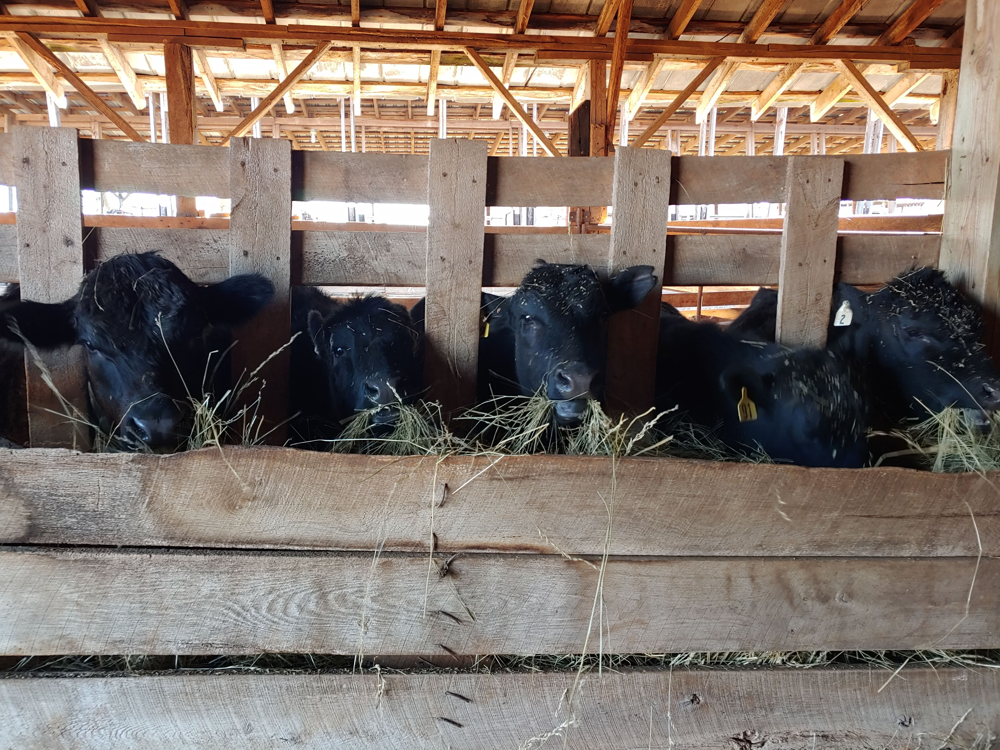

What is grass-fed beef?
Grass-fed beef is when the cattle are grazed on grassy pastures their entire lives. This results in a much healthier, and better tasting meat. When it comes to nutrition, grass-fed beef is higher in key nutrients, including antioxidants and vitamins. Grass-fed beef also has less intramuscular fat, so it tends to be meatier than corn-fed, and tends to cook faster as well.
What is the process of meat processing?
After the cow is taken to the processing plant, they will begin the process of creating beef for consumption. They begin by examining the animal to make sure it is fit for human consumption. After the cow checks out, it will then be slaughtered most likely using a stunning device. The cow is then skinned and sprayed down with water to remove excess blood and bone chips. The beef is then tagged and hung in a large cooler for over a week to age. Aging the beef will improve its flavor, and make it more tender. Finally, the beef is cut according to the end beef products and is sent to stores around the world.
What is rotational grazing?
Rotational grazing is a practice of moving animals through pasture to improve soil and plant health. Only one section of the pasture is grazed at a time, while the remainder of it rests. Grazing pastures allows plants to recover and deepen their root systems.

What are the Quarter and Half Cow estimations?
Quarter of a Cow would come with approximately three 2-3 lb boneless roasts, four packages of stew beef, four packages of soup bones, three packages of short ribs, two packages of liver, fifty 1 lb packages of ground beef, four packages of cube steak, six 1-inch Ribeye Steaks, six 1-inch New York Strips, four Filet Mignon. Total weight is 84-93 lbs at $9.00 per pound.
Half Cow would come with approximately six 2-3 lb boneless roasts, eight packages of stew beef, eight packages of soup bones, six packages of short ribs, four packages of liver, one hundred 1 lb packages of ground beef, eight packages of cube steak, twelve 1-inch Ribeye Steaks, twelve 1-inch New York Strips, eight Filet Mignon. Total weight is 168-186 lbs at $8.50 per pound.